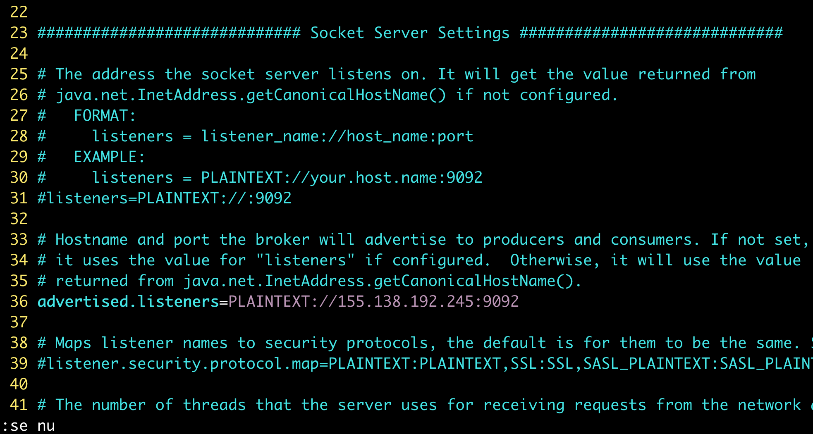
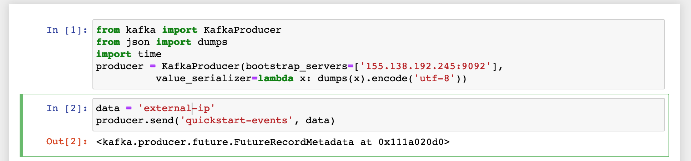
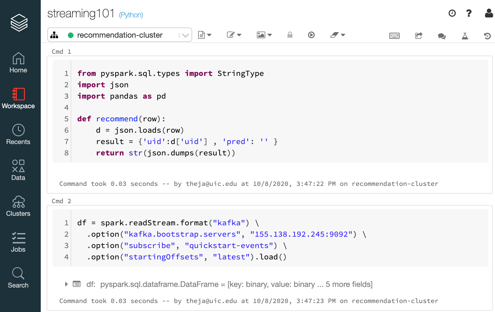
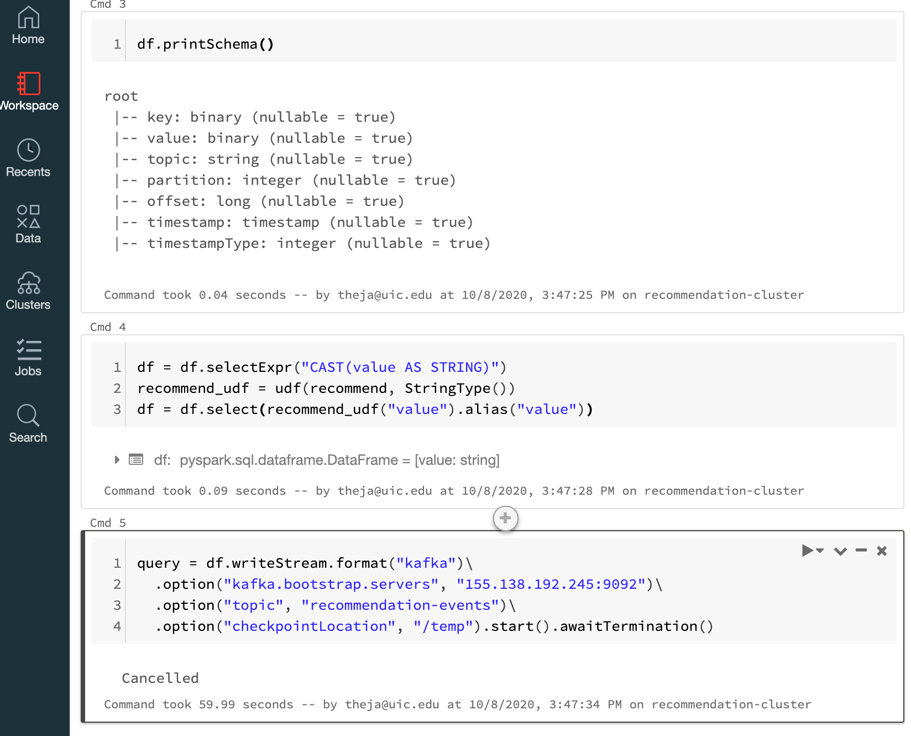

The general idea is that a pyspark function reads input from an input stream (we will use Kafka) and applies a model (or any transformation) and sends its output to an output stream.
Much of the complexity while going from batch to streaming setting is hidden behind the scenes letting data science professionals leverage this infrastructure to serve streaming requirements.
We will set up a streaming pipeline which fetches data from a Kafka topic, uses our prediction model and write the output to a new topic. And this is continuously run till terminated explicitly.
Another key benefit is that if we stop our pyspark code for changes or updates, the rest of the system need not be touched.
We will edit the Kafka config in config/server.properties to use the external IP. We can do this in the same screen session we had started Kafka process in. We should terminate it first using Ctrl+c.
root@vultr:~/kafka_2.13-2.6.0# vim config/server.properties

Lets also allow incoming access to port 9092 (note that this is risky as we running as the root user).
root@vultr:~/kafka_2.13-2.6.0# ufw allow 9092
Rule added
Rule added (v6)
root@vultr:~/kafka_2.13-2.6.0# ufw status verbose
Status: active
Logging: on (low)
Default: deny (incoming), allow (outgoing), disabled (routed)
New profiles: skip
To Action From
-- ------ ----
22 ALLOW IN Anywhere
9092 ALLOW IN Anywhere
22 (v6) ALLOW IN Anywhere (v6)
9092 (v6) ALLOW IN Anywhere (v6)
root@vultr:~/kafka_2.13-2.6.0#
Now start the Kafka process as before.
We can check that access to Kafka works by using a local jupyter notebook (different from above!) and using the same code as before with the IP address explicitly specified.

We should be able to see the message on the consumer terminal we had set up earlier:
root@vultr:~/kafka_2.13-2.6.0# bin/kafka-console-consumer.sh --topic quickstart-events --from-beginning --bootstrap-server localhost:9092
Hello
Theja
["Hello from python", "Theja from python"]
{"name":"Theja"}
"external-ip"
Lets create a second topic to output our recommendations. Got to the terminal where did the describe step above.
root@vultr:~/kafka_2.13-2.6.0# bin/kafka-topics.sh --describe --topic quickstart-events --bootstrap-server localhost:9092
Topic: quickstart-events PartitionCount: 1 ReplicationFactor: 1 Configs: segment.bytes=1073741824
Topic: quickstart-events Partition: 0 Leader: 0 Replicas: 0 Isr: 0
Run the create topic command from above with a new topic name.
root@vultr:~/kafka_2.13-2.6.0# bin/kafka-topics.sh --create --topic recommendation-events --bootstrap-server localhost:9092
Created topic recommendation-events.
Login to Databricks and start a new notebook.
We will first test streaming.


quickstart-events topic.recommendation-events topic.We will reuse the code that trains the surprise-lib SVD model (essentially the basic matrix factorization) and then switch to making predictions given uid from an upstream producer.
We produce a simple event such as {'uid':196} from our local jupyter notebook (for example) and send it to the Kafka cluster as part of the first topic.
This is then read by the pyspark notebook consumer.
The top movies for the uid are then retrieved and then sent to the second topic in the Kafka cluster.
An app downstream can be a consumer of this message from Kafka.